机器学习与容器化平台
愿景
算法同学爽、工程任务开心、技术快速复用，干完战，早点下班。总结了一下具体包括以下几个方面：
开发流程标准化
针对开发者，尤其是新人能够快速进入到开发工作中来， 前提是需要一套比较完善、合理的开发流程，将可能的开发工作流程集中在平台当中，在此基础上完成开发流程的标准化管控， 和军队培训战士一样， 我们从广大人民群众中，选择了最优秀的那一批同学，来到我们的团队，从内务教令、文化教育、长途越野跑、基础实战能力，到最后的兵王，一定是有一套特别完善的标准化流程，Goblin就想做这样的"军队"试验场，将人才的培养、项目开发上线，流程化、标准化，赋能给技术团队，让"新兵"得到最好的实践锻炼，"兵王"打好战；
能力接受与放大器
在大数据、算法团队中，其实很难评估开发人员本身的工作，最近在看一本书， 其中提到针对一个推荐系统产品，有4个关键元素需要注意： 1. UI和UE；2.数据；3.领域知识；4.算法，其权重是1>2>3>4，1和3是"颜值即正义"、"老天赏饭吃"， 2、4是我们开发者需要关注的，而对数据、算法，最难的其实是目标的定制，如何评估一个数据任务、大数据产品、算法模型有价值，需求方说好就一定好？指标升了就一定好？这个不一定，而这也是数据相关从业人员很有挑战的方面，而作为内部平台，算法、工程人员前方打战，我们要做的是保证好后勤，提供（大数据能力）粮草、（模型开发环境）弹药，关键时刻还得赤膊上前一起干（通用模型能力）；
技术可复用
小团队的技术有高有低，专业能力各有不同，数据积累也各有千秋， 如何集合各团队优势，将完成优势互补， 尤其是在互联网日新月异的场景需求下，能快速将以前产品技术复用到新场景上，是一项很关键的能力，支持创新需求的快速落地，是如Goblin这样内部平台的初衷，很多人管这叫中台， 但目前，我们觉得这个词太大，完成技术复用已经是我们到现在以及短期内比较宏远的目标，达到中台那样的恢弘，任重而道远。
算法与工程集散地
实践中，从工作来看，算法工程师和支持算法的工程师技术路线gap太大，大到可能达不到相互理解、相互信任，必须要有一个平台能够弥补这其中的gap，幸运地是，在我们实践中，这一类模式可能是很多花样，但是其内核是稳定不变的，模块化、标准化完成这些其实并不是复杂的工作；
基础知识介绍
到这里，说了很多非技术的事情，开始要写一些技术相关的了，毕竟这是篇正经的技术文章，这里我分享三个Goblin中使用的比较多的技术工作：容器化技术、Kubernetes、分布式存储；
容器化技术
概述
首先，我们来聊下容器化能解决什么问题？
软件开发环境问题
软件开发最复杂的就是开发环境的配置，无论是Python、Scala、C++还是其他的任何语言，在开发之前，需要准备各种运行环境、IDE、辅助工具，而在一个软件的交付上，开发和维护需要保证一摸一样的环境，否则就会经常出现"在我机器上是可以的， 你去xxxxxx"；
软件架构越来越复杂：
软件到现在越来越复杂，就以手机操作系统而言，不仅包括常用的工具APP，云端应用，还有AI功能的服务，越来越复杂的功能造成了多种技术架构必然是模块解耦、多样的技术栈、动态构建资源；
统一管理：
所有功能、架构都需要统一的管理，才能有效地管控这些小恶魔，以至于不出乱子；
容器化技术能够很有效地解决上面问题的， 对于开发者来说， 容器是一个黑盒：
- 你不需要关心容器怎么构建，你只需要知道有何功能；
- 有易用的工具来对容器进行管理与编排；
- 部署模块到容器，集装箱式组合；
- 环境通过文件生成，可简单复用；
容器简史
参考文章: http://www.dockone.io/article/8832，描述的特别好
kubernetes
概述
Kubernetes是一个开源的，用于管理云平台中多个主机上的容器化的应用，Kubernetes的目标是让部署容器化的应用简单并且高效,Kubernetes提供了应用部署，规划，更新，维护的一种机制。在Google内部，容器技术已经应用了很多年，Borg系统运行管理着成千上万的容器应用，在它的支持下，无论是谷歌搜索、Gmail还是谷歌地图，可以轻而易举地从庞大的数据中心中获取技术资源来支撑服务运行。Borg提供了3大好处:
- 隐藏资源管理和错误处理，用户仅需要关注应用的开发。
- 服务高可用、高可靠。
- 可将负载运行在由成千上万的机器联合而成的集群中。
而作为Borg的开源版本， Kubernetes对计算资源进行了更高层次的抽象，通过将容器进行细致的组合，将最终的应用服务交给用户。Kubernetes在模型建立之初就考虑了容器跨机连接的要求，支持多种网络解决方案，同时在Service层次构建集群范围的SDN网络。其目的是将服务发现和负载均衡放置到容器可达的范围，这种透明的方式便利了各个服务间的通信，并为微服务架构的实践提供了平台基础。而在Pod层次上，作为Kubernetes可操作的最小对象，其特征更是对微服务架构的原生支持。
架构

节点
在这张系统架构图中，我们把服务分为运行在工作节点上的服务和组成集群级别控制板的服务。Kubernetes节点有运行应用容器必备的服务，而这些都是受Master的控制。每次个节点上当然都要运行Docker。Docker来负责所有具体的映像下载和容器运行。
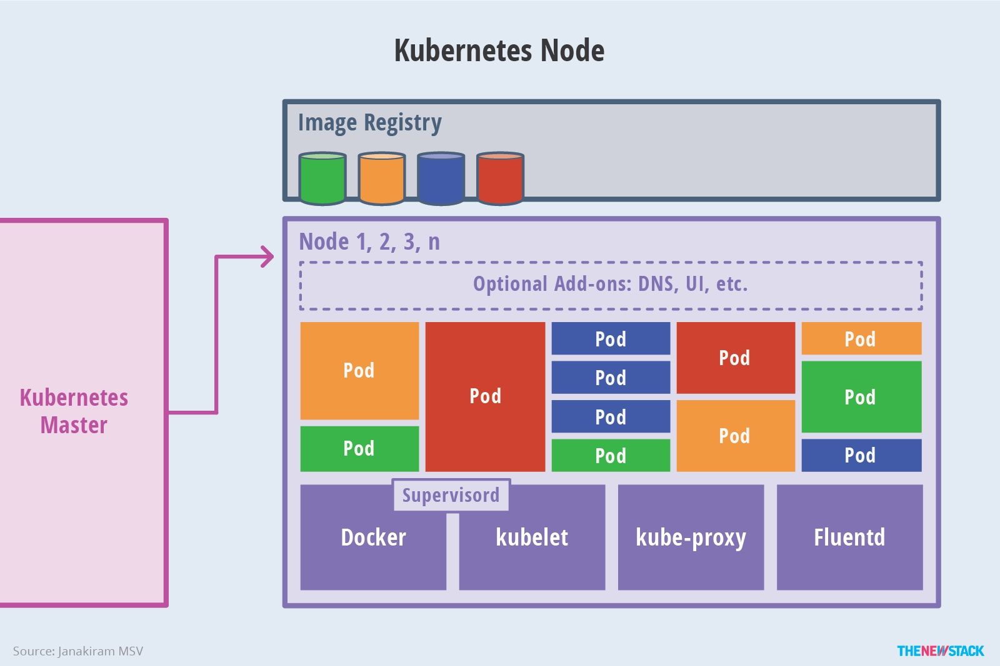
Kubernetes主要由以下几个核心组件组成：
- etcd保存了整个集群的状态；
- apiserver提供了资源操作的唯一入口，并提供认证、授权、访问控制、API注册和发现等机制；
- controller manager负责维护集群的状态，比如故障检测、自动扩展、滚动更新等；
- scheduler负责资源的调度，按照预定的调度策略将Pod调度到相应的机器上；
- kubelet负责维护容器的生命周期，同时也负责Volume（CVI）和网络（CNI）的管理；
- Container runtime负责镜像管理以及Pod和容器的真正运行（CRI）；
- kube-proxy负责为Service提供cluster内部的服务发现和负载均衡；
除了核心组件，还有一些推荐的Add-ons：
- kube-dns负责为整个集群提供DNS服务
- Ingress Controller为服务提供外网入口
- Heapster提供资源监控
- Dashboard提供GUI
- Federation提供跨可用区的集群
- Fluentd-elasticsearch提供集群日志采集、存储与查询
分层架构
Kubernetes设计理念和功能其实就是一个类似Linux的分层架构，如下图所示：
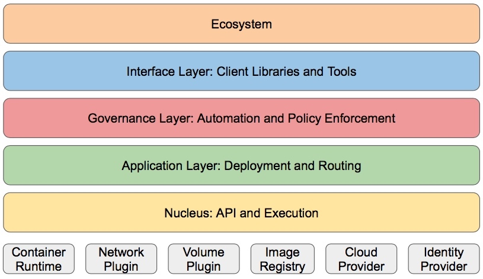
- 核心层：Kubernetes最核心的功能，对外提供API构建高层的应用，对内提供插件式应用执行环境
- 应用层：部署（无状态应用、有状态应用、批处理任务、集群应用等）和路由（服务发现、DNS解析等）
- 管理层：系统度量（如基础设施、容器和网络的度量），自动化（如自动扩展、动态Provision等）以及策略管理（RBAC、Quota、PSP、NetworkPolicy等）
- 接口层：kubectl命令行工具、客户端SDK以及集群联邦
- 生态系统：在接口层之上的庞大容器集群管理调度的生态系统，可以划分为两个范畴
- Kubernetes外部：日志、监控、配置管理、CI、CD、Workflow、FaaS、OTS应用、ChatOps等
- Kubernetes内部：CRI、CNI、CVI、镜像仓库、Cloud Provider、集群自身的配置和管理等
分布式存储
Kubernetes 特别高效地管理多个主机上的容器化应用的，但是在此之前，尤其在数据科学开发场景下，如何共享数据是一个特别严峻的话题，这里我们专门拿出来提下Ceph这一分布式文件系统，简而意之，提供类似于NAS能力，提供多个容器能同时访问的能力。
概述
Ceph 可以简单地定义为：
- 可轻松扩展到数 PB 容量；
- 高性能文件存储、访问能力；
- 高可靠性；
架构
Ceph生态系统可以大致划分为四部分：客户端（数据用户）、元数据服务器（缓存和同步分布式元数据）、对象存储集群（将数据和元数据作为对象存储，执行其他关键职能）、集群监视器（执行监视功能）。

一个标准的流程：
- 客户使用元数据服务器，执行元数据操作（来确定数据位置）。
- 元数据服务器管理数据位置，以及在何处存储新数据。值得注意的是，元数据存储在一个存储集群（标为 “元数据 I/O”）。实际的文件 I/O 发生在客户和对象存储集群之间。这样一来，
- 打开、关闭、重命名由元数据服务器管理，读和写操作则直接由对象存储集群管理。
- 集群监控用于监控这一流程，监控元数据服务器、对象存储的文件IO等等；
组件
Ceph 客户端
Ceph 文件系统 — 或者至少是客户端接口 — 在 Linux 内核中实现。值得注意的是，在大多数文件系统中，所有的控制和智能在内核的文件系统源本身中执行。但是，在 Ceph 中，文件系统的智能分布在节点上，这简化了客户端接口，并为 Ceph 提供了大规模（甚至动态）扩展能力。
Ceph 元数据服务器
元数据服务器（cmds）的工作就是管理文件系统的名称空间。虽然元数据和数据两者都存储在对象存储集群，但两者分别管理，支持可扩展性。事实上，元数据在一个元数据服务器集群上被进一步拆分，元数据服务器能够自适应地复制和分配名称空间，避免出现热点。元数据服务器管理名称空间部分，可以（为冗余和性能）进行重叠。元数据服务器到名称空间的映射在 Ceph 中使用动态子树逻辑分区执行，它允许 Ceph 对变化的工作负载进行调整（在元数据服务器之间迁移名称空间）同时保留性能的位置。
Ceph 监视器
Ceph 包含实施集群映射管理的监视器，但是故障管理的一些要素是在对象存储本身中执行的。当对象存储设备发生故障或者新设备添加时，监视器就检测和维护一个有效的集群映射。这个功能按一种分布的方式执行，这种方式中映射升级可以和当前的流量通信。
Ceph 对象存储
传统的驱动是只响应来自启动者的命令的简单目标。但是对象存储设备是智能设备，它能作为目标和启动者，支持与其他对象存储设备的通信和合作。从存储角度来看，Ceph 对象存储设备执行从对象到块的映射（在客户端的文件系统层中常常执行的任务）。这个动作允许本地实体以最佳方式决定怎样存储一个对象。Ceph 的早期版本在一个名为 EBOFS 的本地存储器上实现一个自定义低级文件系统。这个系统实现一个到底层存储的非标准接口，这个底层存储已针对对象语义和其他特性（例如对磁盘提交的异步通知）调优。今天，B-tree 文件系统（BTRFS）可以被用于存储节点，它已经实现了部分必要功能（例如嵌入式完整性）。
ceph On K8s
PVC 的全称是：PersistentVolumeClaim（持久化卷声明），PVC 是用户存储的一种声明，PVC 和 Pod 比较类似，Pod 消耗的是节点，PVC 消耗的是 PV 资源，Pod 可以请求 CPU 和内存，而 PVC 可以请求特定的存储空间和访问模式。对于真正使用存储的用户不需要关心底层的存储实现细节，只需要直接使用 PVC 即可。ceph提供底层存储功能，cephfs方式支持k8s的pv的3种访问模式ReadWriteOnce，ReadOnlyMany ，ReadWriteMany
以下是goblin上对某个任务的k8s资源编排文件
apiVersion: apps/v1
kind: StatefulSet
metadata:
creationTimestamp: '2020-04-09T03:44:26Z'
labels:
system/project-goblin: 'true'
goblin/creator-email: duanshishi
goblin/instance-id: '97'
goblin-notebook: '97'
statefulset: notebook-duanshishi-1586403865616-97
login-password: 2cfa89d4-da8e-455c-98ef-2a0a0e1a3b04
goblin/creator-group: '422'
goblin/creator-id: '128'
goblin/exec-mode: manual
system/tenant: music-da
goblin/type: development-environment
name: notebook-duanshishi-1586403865616-97
namespace: goblinlab
selfLink: /apis/apps/v1/namespaces/goblinlab/statefulsets/notebook-duanshishi-1586403865616-97
uid: 68fdd40f-7a14-11ea-b983-fa163e51ded8
spec:
podManagementPolicy: OrderedReady
replicas: 1
revisionHistoryLimit: 10
selector:
matchLabels:
system/app: notebook-duanshishi-1586403865616-97
statefulset: notebook-duanshishi-1586403865616-97
serviceName: ""
template:
metadata:
labels:
system/app: notebook-duanshishi-1586403865616-97
system/project-goblin: 'true'
statefulset: notebook-duanshishi-1586403865616-97
system/tenant: music-da
spec:
containers:
-
env:
-
name: NOTEBOOK_TAG
value: notebook-duanshishi-1586403865616-97
-
name: SPARK_DRIVER_PORT
value: '22480'
-
name: SPARK_DRIVER_BLOCKMANAGER_PORT
value: '22490'
-
name: SPARK_UI_PORT
value: '22500'
-
name: HADOOP_USER
value: duanshishi
-
name: PASSWORD
value: 2cfa89d4-da8e-455c-98ef-2a0a0e1a3b04
-
name: ROOT_PASSWORD
value: 2cfa89d4-da8e-455c-98ef-2a0a0e1a3b04
image: 'music-harbor.k8s.cn-east-p1.internal/library/rtrs-dev-py37-hadoop:v1.5'
imagePullPolicy: IfNotPresent
name: notebook
resources:
requests:
memory: 24Gi
cpu: '10'
limits:
memory: 24Gi
cpu: '10'
terminationMessagePath: /dev/termination-log
terminationMessagePolicy: File
volumeMounts:
-
mountPath: /etc/localtime
name: localtime
readOnly: false
-
mountPath: /var/lib/lxcfs/
mountPropagation: HostToContainer
name: lxcfs-folder
readOnly: false
-
mountPath: /proc/cpuinfo
name: proc-cpuinfo
readOnly: false
-
mountPath: /proc/diskstats
name: proc-diskstats
readOnly: false
-
mountPath: /proc/loadavg
name: proc-loadavg
readOnly: false
-
mountPath: /proc/meminfo
name: proc-meminfo
readOnly: false
-
mountPath: /proc/stat
name: proc-stat
readOnly: false
-
mountPath: /proc/uptime
name: proc-uptime
readOnly: false
-
mountPath: /sys/devices/system/cpu/online
name: lxcfs-cpu
readOnly: false
-
mountPath: /root
name: develop-duanshishi
readOnly: false
-
mountPath: /mnt/goblin-data
name: goblin-data
readOnly: false
-
mountPath: /root/demo
name: notebook-demo
readOnly: false
-
mountPath: /mnt/goblin-log
name: goblin-log
readOnly: false
-
mountPath: /mnt/goblin-cache
name: goblin-cache
readOnly: false
dnsPolicy: ClusterFirst
imagePullSecrets:
-
name: registrykey-myhub
nodeSelector:
system/namespace: netease.share
system/tenant: netease.share
restartPolicy: Always
schedulerName: default-scheduler
securityContext: {}
terminationGracePeriodSeconds: 30
volumes:
-
hostPath:
path: /etc/localtime
type: ""
name: localtime
-
hostPath:
path: /var/lib/lxcfs/
type: DirectoryOrCreate
name: lxcfs-folder
-
hostPath:
path: /var/lib/lxcfs/lxcfs/proc/diskstats
type: FileOrCreate
name: proc-cpuinfo
-
hostPath:
path: /var/lib/lxcfs/lxcfs/proc/diskstats
type: FileOrCreate
name: proc-diskstats
-
hostPath:
path: /var/lib/lxcfs/lxcfs/proc/loadavg
type: FileOrCreate
name: proc-loadavg
-
hostPath:
path: /var/lib/lxcfs/lxcfs/proc/meminfo
type: FileOrCreate
name: proc-meminfo
-
hostPath:
path: /var/lib/lxcfs/lxcfs/proc/stat
type: FileOrCreate
name: proc-stat
-
hostPath:
path: /var/lib/lxcfs/lxcfs/proc/uptime
type: FileOrCreate
name: proc-uptime
-
hostPath:
path: /var/lib/lxcfs/lxcfs/sys/devices/system/cpu/online
type: FileOrCreate
name: lxcfs-cpu
-
cephfs:
path: /pvc-volumes/kubernetes/kubernetes-dynamic-pvc-ca4d6207-1b24-11ea-ac15-0a580ab28a22
secretRef:
name: ceph-secret-admin-goblin
user: admin
monitors:
- 10.194.174.173
name: goblin-data
-
cephfs:
path: /pvc-volumes/kubernetes/kubernetes-dynamic-pvc-9eba69ee-3123-11ea-a0ac-0a580ab2c805
secretRef:
name: ceph-secret-admin-goblin
user: admin
monitors:
- 10.194.174.173
name: notebook-demo
-
cephfs:
path: /pvc-volumes/kubernetes/kubernetes-dynamic-pvc-c1e328db-1b24-11ea-ac15-0a580ab28a22
secretRef:
name: ceph-secret-admin-goblin
user: admin
monitors:
- 10.194.174.173
name: goblin-log
-
cephfs:
path: /pvc-volumes/kubernetes/kubernetes-dynamic-pvc-cb7cadba-1b24-11ea-ac15-0a580ab28a22
secretRef:
name: ceph-secret-admin-goblin
user: admin
monitors:
- 10.194.174.173
name: goblin-cache
-
cephfs:
path: /pvc-volumes/kubernetes/kubernetes-dynamic-pvc-d22931ef-3063-11ea-a0ac-0a580ab2c805
secretRef:
name: ceph-secret-admin-goblin
user: admin
monitors:
- 10.194.174.173
name: develop-duanshishi
updateStrategy:
type: RollingUpdate
rollingUpdate:
partition: 0
status:
collisionCount: 0
currentReplicas: 1
currentRevision: notebook-duanshishi-1586403865616-97-6bf6f8bcd8
observedGeneration: 1
readyReplicas: 1
replicas: 1
updateRevision: notebook-duanshishi-1586403865616-97-6bf6f8bcd8
updatedReplicas: 1
上面是我某个任务完成的yaml文件，在k8s中，yaml 可以告知任何资源的使用与配置如cpu、内存、gpu、对外端口等等，也包括分布式存储如ceph，上面文件中挂载了包括notebook-demo, goblin-log, goblin-cache, goblin-data, develop-duanshishi等多个pvc， pvc底层是cephfs， 且分配了专门的卷，来分享ceph的存储。
赋能
有了容器化、k8s、分布式存储之后，直观上，就有了把集群机器资源单独分配给需求用户的能力，且在不使用时弹性收回，每一个用户可以独立构建自己相关的开发环境，共享给任何团队的小伙伴，也可以将开发环境打包完成线上部署。下面我们从资源隔离与环境隔离、大数据开发、工程开发、机器学习等四个方面来聊一下Goblin的赋能。
资源隔离与环境隔离
name: notebook
resources:
requests:
memory: 24Gi
cpu: '10'
limits:
memory: 24Gi
cpu: '10'
...
image: 'music-harbor.k8s.cn-east-p1.internal/library/rtrs-dev-py37-hadoop:v1.5'
还是从上面那个yaml文件来说明， k8s提供简单的资源分配能力，针对于我们使用的notebook应用， 我们申请10cpu，24G内存来运行开发环境，这个资源是系统级的隔离，Docker 资源利用率的优势，在于你几乎无法感受到容器化的消耗， 因此你几乎可以认为你就是在使用一个独占的24G, 10cpu的机器资源（几乎没有任何损耗），而容器镜像的选择让你几乎可以完全自定义自己的开发环境，你可以选择不同的操作系统、不同的c++编译环境、Python开发工具等等，所以的环境都可以是你定义的，而定义的十分简单，理论上你只需要把你想用的image push到我们容器集群的镜像库，如rtrs-dev-py37-hadoop:v1.5 就是我们的一个centos的基本的镜像，当然，在notebook上我们默认提供了notebook、python、spark、tensorflow、tensorboard的环境支持，后期自定义的容器镜像可以完全由用户定义， 目前我们使用的镜像库如下，后期goblin将会公开这部分能力，如果用户有自定义环境的高级需求，只需要提供相应dockerfile， goblin后台会自动编译成专属镜像：

大数据开发
环境配置
大数据开发能力是Goblin的基础， 目前我们所有的线上镜像都集成了基本的hadoop、Spark支持，打通了线上大数据集群，可以通过多种方式来访问线上数据，如Notebook pyspark、spark shell、python等等进行大数据开发，有了容器之后，这一切变得十分简单， 仅仅需要构造image时，配置好相关开发环境即可， 下面是我们某个镜像dockerfile的大数据相关的配置：
COPY cluster/hadoop-2.7.3 /app/hadoop
COPY cluster/apache-hive-2.1.1-bin/ /app/hive
COPY cluster/spark-2.3.2-bin-ne-0.2.0 /app/spark
COPY cluster/spark-lib/*.jar /app/spark/jars/
COPY cluster/apache-hive-2.1.1-bin/conf/hive-site.xml /app/spark/conf/hive-site.xml
COPY krb5.conf /etc/
COPY keytab_init.sh /app/keytab_init.sh
COPY keytab_init.py /app/keytab_init.py
COPY jupyter /app/jupyter
COPY code-server /app
RUN chmod +x /app/keytab_init.sh
ENV SHELL=/bin/bash
ENV JUPYTER_ENABLE_LAB=yes
ENV HIVE_HOME=/app/hive
ENV HADOOP_HOME=/app/hadoop
ENV JAVA_HOME=/usr/lib/jvm/java-8-openjdk-amd64
ENV SPARK_HOME=/app/spark
ENV PATH=$JAVA_HOME/bin:$HIVE_HOME/bin:$HADOOP_HOME/bin:$SPARK_HOME/bin:$PATH
ENV PYTHONPATH=$SPARK_HOME/python:$SPARK_HOME/python/lib/py4j-0.10.7-src.zip:$PYTHONPATH
开发工具
基于大数据的开发工具，我们提供了jupyter lab， jupyter lab是一套比较强大的数据科学开发工具，是大家比较熟悉的jupyter notebook的下一代产品， 集成了包括文件浏览、多窗口支持、多内核支持等等相关功能，如下图， 一个比较简单的访问线上hive表的脚本：

当然你可以在jupyter lab中打开terminal，通过spark-shell、或者其他工具来访问：

工程开发
动机
goblin为方便工程开发，提供了ssh登录、jupyter lab以及vscode online几种使用基于定制化容器环境的开发模式， 业务同学虽然感觉相对于原有的物理机开发会更方便，但是依然给我们这边提了很多问题，其中比较多的一个问题是，是否能够更方便，直接本地连接，并且接入到IDE，当然是可以的，其实本人之前也是采用远程开发的模式，不过在Goblin之前，我选择在本地构建好专门的Docker 容器，通过ssh 链接入本地容器，接下来会和给为小伙伴演示，如何配置本地IDE和Goblin完成远程开发，为了方便，以及考虑成本的问题，本章以vscode为例， 其他相关的IDE如clion，我们测试下来也可以的。
本地环境安装
vscode 安装
vscode 安装比较简单， 参考https://code.visualstudio.com/上，按不同操作系统安装即可
相关插件以及开发环境安装
vscode 安装完成之后，根据开发任务，比如你使用python开发，安装好常用插件，以下是我的插件列表：
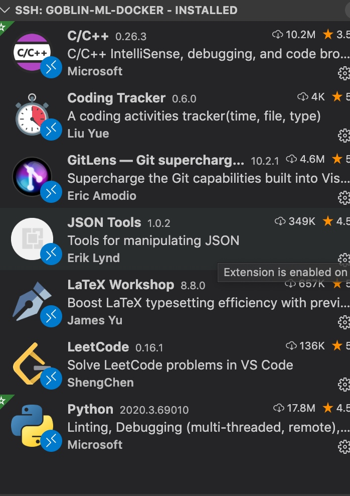
Remote SSH
Remote SSH 插件基本介绍
Visual Studio Code Remote - SSH
The Remote - SSH extension lets you use any remote machine with a SSH server as your development environment. This can greatly simplify development and troubleshooting in a wide variety of situations. You can:
1. Develop on the same operating system you deploy to or use larger, faster, or more specialized hardware than your local machine.
2. Quickly swap between different, remote development environments and safely make updates without worrying about impacting your local machine.
3. Access an existing development environment from multiple machines or locations.
4. Debug an application running somewhere else such as a customer site or in the cloud.
Remote SSH 是在本地做goblin远程开发的一个插件，以上是基本介绍；
goblin 环境
新建容器
goblin-实验室-实例管理页面，新建实例：
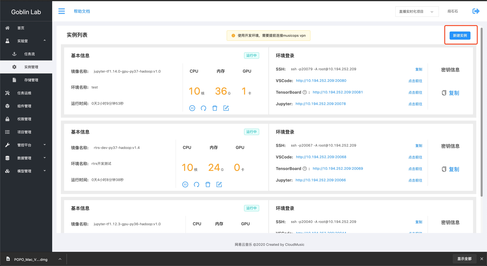
填入对应的配置信息，选择合适的镜像：

启动镜像后，ssh、vscode、TensorBoard，Jupyter信息如下，

修改本地ssh配置
在本地~/.ssh/config, 配置好容器的相关信息，如ip、port、alias等等
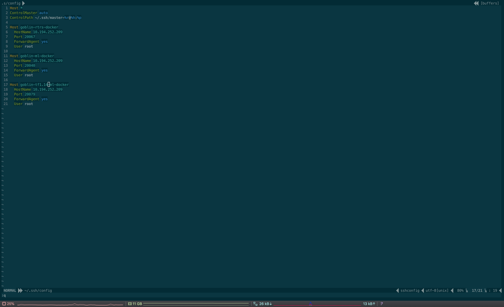
Remote SSH链接
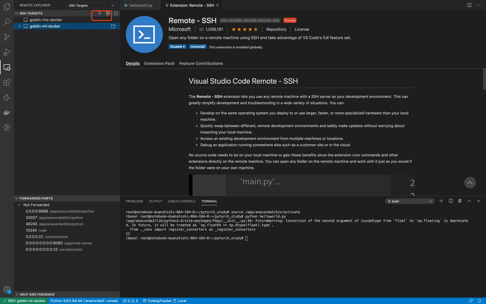
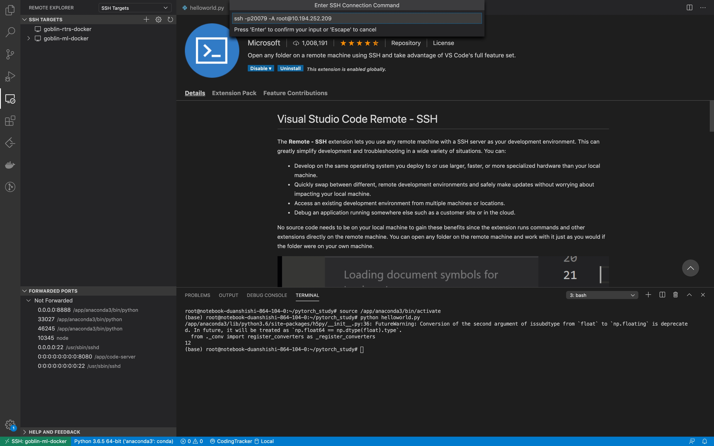
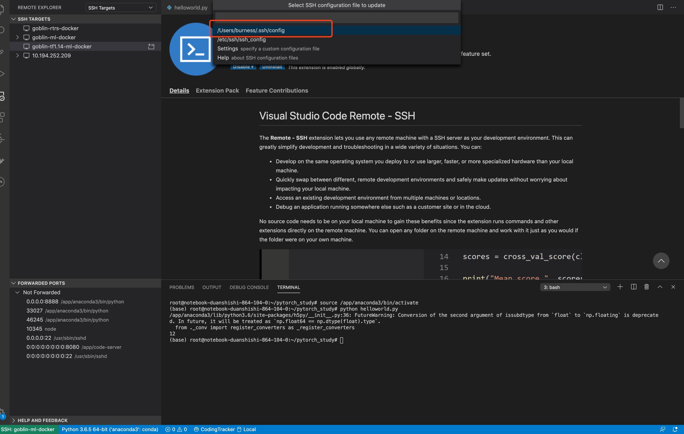


代码开发
c++
在本地安装好c++插件之后， 目前编辑器使用的就是goblin docker容器内的环境，直接打开容器镜像内挂载的ceph 目录：

c++相关的环境也比较方便，比如支持提示、智能跳转、查看源文件等等功能；


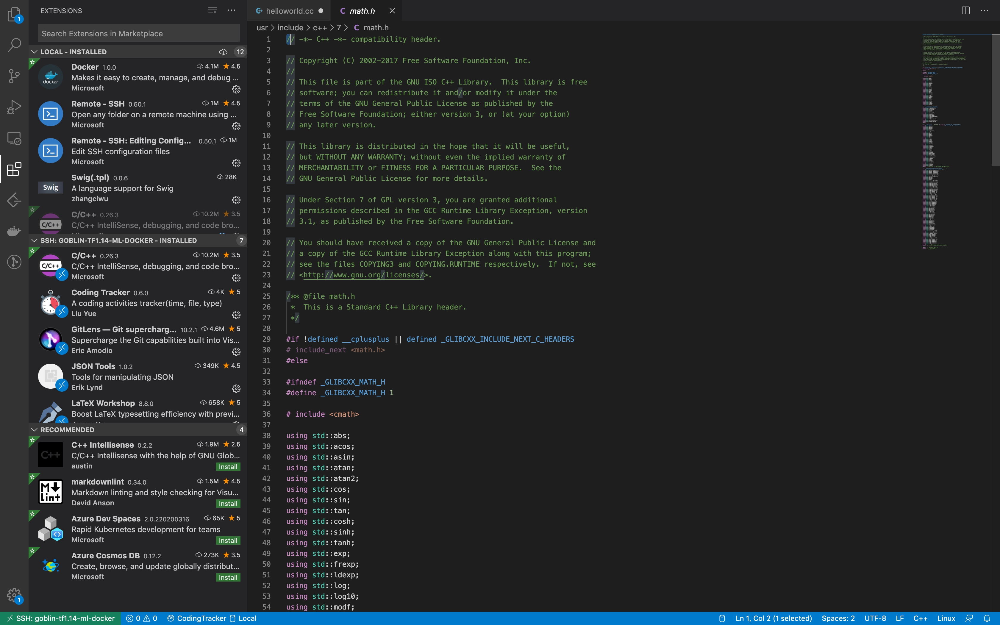
开发完成后，调出命令行， g++ helloworld.cc -o hellworld,当然，如果你的项目靠makefile或者cmake也可以的， 小伙伴们自己发挥吧；

编译完成之后， 执行即可
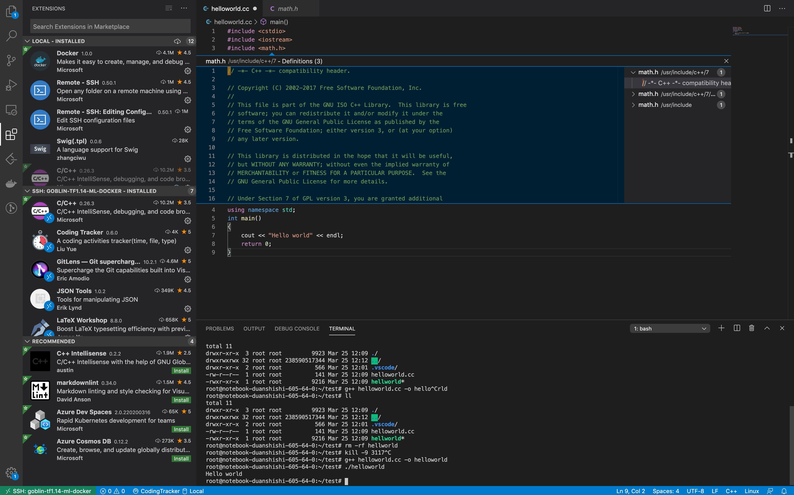
python
业务同学更多的可能是python的开发:
- 切换目录至pytorch_study的目录， 本目录是一个：

直接运行发现包缺失问题， 因为我们的镜像tf1.14中没有继承pytorch， 问题不大，我们在命令行安装即可：

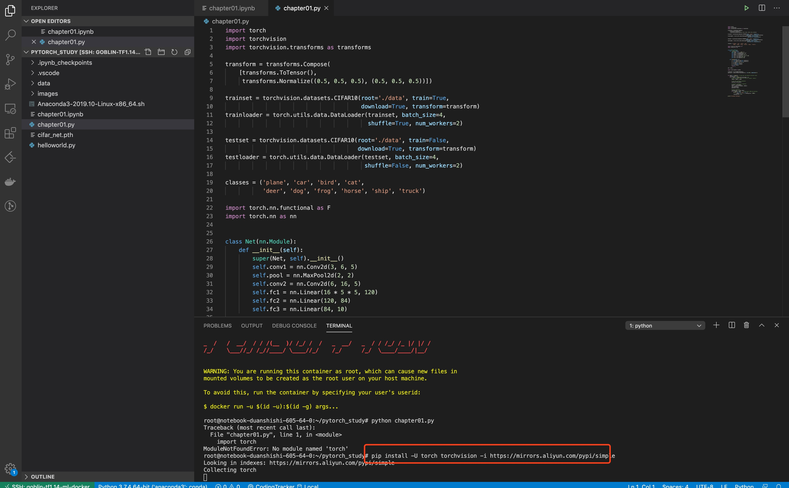
安装完成后， 我们也很方便的通过vscode 直接跳转到远端goblin docker下的文件进行代码的阅读：

模型开始训练

显卡占用查询，目前goblin docker有个bug，是无法查看显卡占用的线程，已在修复中：

其他IDE支持
我们团队自研的thanos 基于CMake来构建项目，目前也是基于Goblin Docker完成开发， 以下是基于clion上使用Goblin Docker完成编译的项目截图：
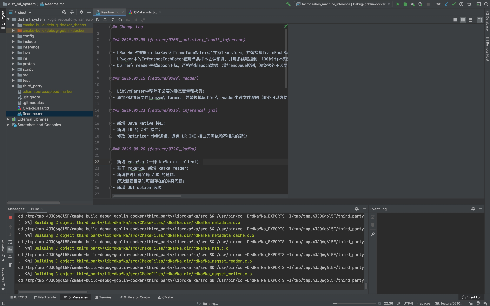
机器学习
Goblin提供的机器学习能力支持包括Jupyter Lab、python shell、大数据环境访问、远程开发等等能力，还支持GPU设备的分配、基于IronBaby的分布式能力等等
机器学习开发环境
Jupyter Lab 深度学习模型开发， 基于vscode远程开发的例子见上章pytorch_test的例子
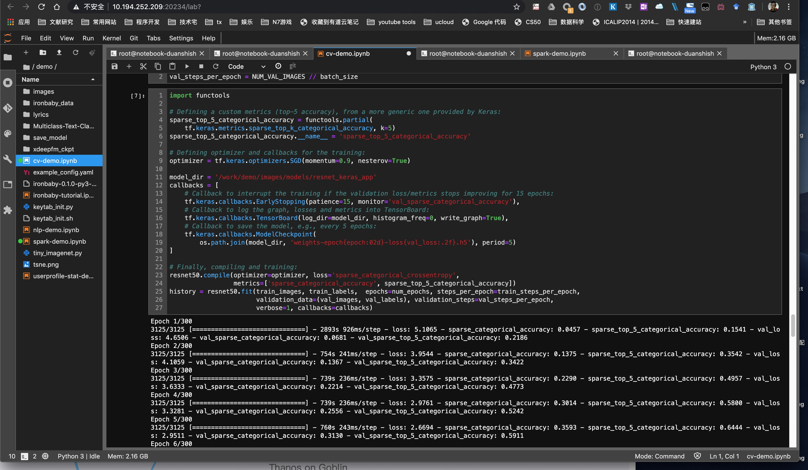
模型训练调度
模型开发完成之后， 会定期更新训练数据完成模型训练，比如按天更新，针对模型训练调度的需求， Goblin提供了容器化调度组件

配置好，PVC、启动文件、启动参数、环境镜像，你可以快速将模型调度起来， 调度支持时间通配符， 你可以通过自定义你的python启动脚本完成各种自定义逻辑的调度策略；
模型部署
模型部署， 目前是基于Goblin上开发了模型发现服务，目前已经与线上精排系统打通， 用户可以通过简单地配置好模型目录地址、模型线上服务集群等基本信息，即可完成模型定时调度后的定时发布，该发布不仅包括模型，还包括模型场景使用到的词表、Embedding向量等等，因涉及到具体业务；目前我们也在和其他团队合作优化模型部署场景，这一块还有很多的工作来进行，后续应该会有专门工作介绍，这里就不详细描述了。
分布式机器学习
基于容器化的机器学习平台后， 分布式机器学习能力的扩展就变得十分容易，这里介绍我们团队的两个相关的工作：IronBaby、Thanos：
IronBaby
IronBaby是基于TensorFlow为底层框架的推荐系统工具包, IronBaby优势在于企业级的TensorFlow工程经验，对性能考虑比较全面，算法同学仅需要完成模型结构开发即可完成业务模型的开发与调试，目前已有若干场景使用IronBaby完成开发， 以下是某个demo实验场景中的一些配置：

模型训练、导出，仅需要几行即可实现：

基于Goblin的IronBaby分布式：

当然也可以在前面提到的Jupyter Lab notebook中尝试用单机多卡：
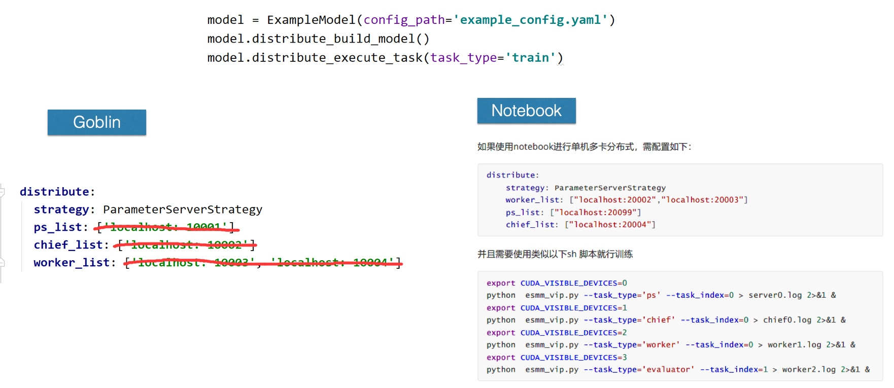
某个业务场景评测数据：
单机多卡（1 server 3 worker）：

多机分布式加速比（Batch size 5120）：几乎线性加速，且我们发现，目前发现在我们业务很多场景瓶颈不在于计算、而在于IO， 这里有不同经验的人欢迎在下面留言，在杭州的小伙伴也欢迎疫情后约出来一起喝咖啡；

Thanos
Thanos是基于parameter server自研的机器学习框架，目前主要针对实时化场景，之前的文章有过分享，这里就不详述了，和IronBaby一样，Thanos是基于KuberFlow的tf_operator完成快速的改造，来支持分布式训练与调度的；
思考
在这块有一些思考，尤其是项目不断迭代的过程中， 我发现其实蛮有意思的
- 组件细还是粗： 首先是组件粗还是细，最开始，我们的思路参考了国内很多不同的云计算平台的机器学习平台，构建很多功能细致的组件，后来发现几乎没人使用，开发同学更偏向于将自己的业务逻辑代码化，而不是简单地拖拉，很多时候他们可能仅仅只需要一个自定义的容器化调度组件，其他的他们会自己来解决，比如特征id化等等，而云平台如PAI、Azure由于针对用户群体不同，更偏向把这部分逻辑也约束掉，但是在我们经验看来，过度细化的组件群基本上没有人来用， 拖拖拉拉的场景好像也并不合适；
- 必须要有一些舍弃：平台的工作大且宽泛，必须要要有一些舍弃，一定是有特别多的事情可以去完成，但是必须抓住平台用户的核心需求， 比如早期，我们曾经尝试抽象化通用算法能力， 后来发现，至少在近期这块其实是并不需要的， 真正贴近用户需求才是最迫切的， 通过和其他团队同学合作，完成模型部署（精排系统）的接入；
- 售后服务才是王道，才是开始：基本需求完成后， 我们发现和用户在一起才是开始， 用户会反馈各种各样的bug、各式各样的需求来促使我们去一步步修改、迭代我们原本的规划，很多时候，早期大而全的roadmap，并没有其必要性。为此我们通过维护专门的用户群，定期回访头部用户， 来迅速迭代我们的需求，以及要完成的工作；
- 不足、不足还是不足： 还有太多的工作没有完成，有太多太多的问题，比如稳定性、易用性等等，这其中更多的可能不是技术本身的问题， 团队协作、用户需求可能是我们需要特别关注的， 期待后面能做的更好。